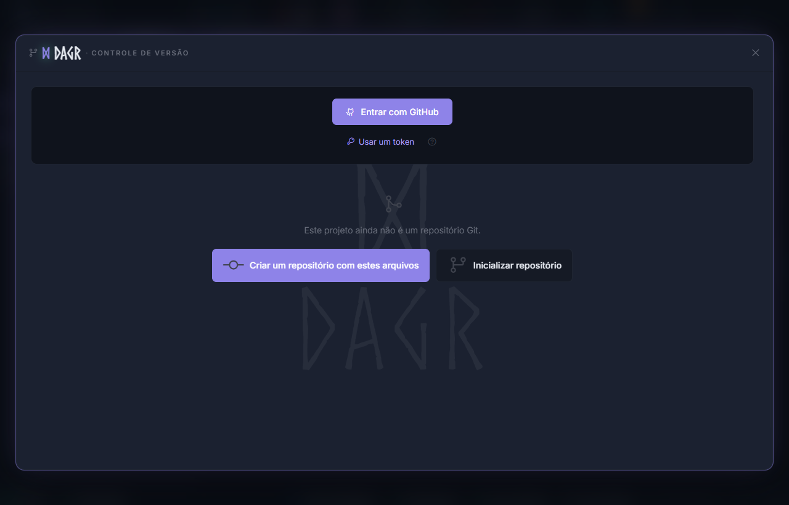
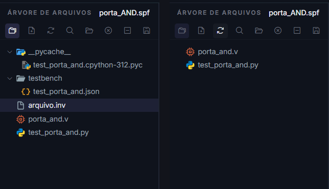

Source Control e Git¶
O painel de Controle de Versão integra as operações Git mais frequentes ao projeto aberto na AURORA. Ele permite iniciar um repositório, revisar alterações, criar commits, sincronizar com o GitHub e clonar projetos associados à conta conectada.
{kind=link}

Sem uma conta conectada e antes da inicialização local, o painel oferece Criar um repositório com estes arquivos e Inicializar repositório, sem exibir nomes, avatares ou repositórios pessoais.¶
Começar com o projeto aberto¶
Quando a pasta do projeto ainda não contém um repositório Git, o painel oferece duas ações:
- Criar um repositório com estes arquivos
Inicializa o Git na pasta do projeto, prepara os arquivos, cria o commit inicial e conduz a publicação em um novo repositório remoto quando a conta do GitHub está conectada.
- Inicializar repositório
Cria apenas o repositório Git local. Use esta opção para versionar o projeto sem publicá-lo imediatamente ou para configurar o remoto depois.
O repositório usa a pasta que contém o .spf; portanto, fontes, testbenches e demais arquivos do projeto podem ser acompanhados em conjunto. Revise a lista antes do primeiro commit para evitar incluir resultados volumosos ou credenciais.
Alterações e commits¶
Na aba Alterações, a AURORA separa arquivos modificados, novos e preparados. Clique em um arquivo para abrir o diff e use as caixas de seleção para controlar o próximo commit.
Controle |
O que faz |
|---|---|
Preparar / Tirar do stage |
Inclui ou remove um arquivo do próximo commit |
Preparar tudo / Despreparar tudo |
Aplica a seleção a todos os arquivos listados |
Resumo do commit |
Define a mensagem que identifica a alteração |
Commit |
Registra os arquivos preparados no histórico local |
Amend |
Atualiza o commit mais recente com a seleção e a mensagem atuais |
Desfazer último commit |
Retorna o último commit para alterações locais, conforme a confirmação exibida |
Atualizar |
Recarrega status, branch e diferenças do repositório |
Use a aba Histórico para consultar commits, autores e arquivos alterados. Ao abrir um commit, a interface carrega o diff de cada arquivo sob demanda.
Sincronização e branches¶
Controle |
O que faz |
|---|---|
Fetch |
Consulta o estado do remoto sem integrar as mudanças |
Pull |
Traz e integra os commits do remoto à branch atual |
Push |
Envia os commits locais ao remoto configurado |
Publicar |
Cria ou associa o repositório remoto quando ele ainda não existe |
Branches |
Troca de branch, cria uma branch, acompanha branches remotas e faz merge |
Alterações guardadas |
Restaura ou descarta um stash criado durante uma troca de branch |
Se uma troca de branch sobrescreveria alterações locais, a AURORA pode guardá-las em stash antes da troca. Leia as confirmações antes de merge, restauração ou descarte, pois essas operações alteram o conteúdo do projeto no disco.
Conectar e clonar do GitHub¶
Conecte uma conta do GitHub no próprio painel para listar os repositórios aos quais ela tem acesso. Na aba Clonar:
Escolha um repositório da conta ou das organizações disponíveis.
Selecione a pasta de destino.
Clique em Clonar.
Aguarde a AURORA procurar arquivos
.spfno conteúdo baixado.Abra o projeto encontrado ou consulte-o em Projetos.
A lista Projetos oferece ações para abrir o projeto na AURORA, acessar o repositório no GitHub, abrir o terminal, mostrar a pasta no Explorer ou remover a entrada da lista. Remover a entrada não deve ser confundido com excluir o repositório do disco; leia a confirmação apresentada pela interface.
A integração pode usar token armazenado de forma segura ou OAuth, conforme a configuração da instalação. Nunca inclua tokens em arquivos do projeto, capturas de tela ou commits.
Usar .inv sem alterar o Git¶
O .inv é um filtro exclusivo da visualização Pastas. Ele não remove arquivos, não muda o .spf, não altera o status Git e não substitui .gitignore.
O exemplo abaixo foi aplicado ao projeto porta_AND:
# Oculta artefatos locais apenas na visualização Pastas da AURORA.
__pycache__/
testbench/
arquivo.inv
{kind=link}

À esquerda, pastas auxiliares e arquivo.inv aparecem na árvore. À direita, depois de salvar o .inv, permanecem somente os arquivos não filtrados.¶
Use .inv para reduzir o ruído visual na AURORA e .gitignore para impedir que o Git rastreie arquivos gerados, temporários ou locais. Um item escondido por .inv ainda pode aparecer normalmente no painel de Controle de Versão.
Cuidados¶
Revise o diff antes de preparar ou confirmar arquivos.
Salve as abas abertas antes de trocar de branch.
Faça
Fetchantes de sincronizar um projeto compartilhado.Não publique saídas geradas ou credenciais sem necessidade.
Preserve uma cópia do projeto antes de operações estruturais importantes.